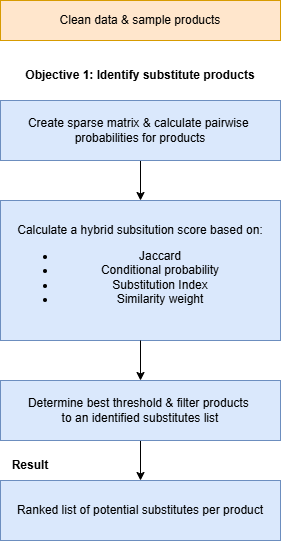

The Methodology — Building the Substitution Detective 🧮
This stage focuses on Objective 1: finding substitute products for a chosen item. Instead of a black-box predictive model, we built a transparent, behavior-driven system that combines co-occurrence, context, and exclusivity into one interpretable hybrid score.

Figure 1 — Overview of the hybrid substitution framework
🧱 Step 1 – Data Representation
Every investigation needs a map — ours is a product–order matrix. Each row represents a customer order; each column, a product. A simple 1 or 0 marks whether that product was purchased. This sparse setup lets us track which products travel together through thousands of baskets while keeping the math efficient.
⚙️ Step 2 – Feature Construction
From the matrix, we extracted three key behavioral clues about how two products relate:
Together, these form the DNA of substitution behavior — contextual overlap, purchase dependency, and mutual exclusivity.
🧠 Step 3 – Hybrid Substitution Scoring
Once we computed all three features, they were normalized and combined into a single hybrid score — a 0–1 scale that ranks how likely two products are to substitute each other.
- Same department + aisle → weight = 1.0
- Same department, different aisle → weight = 0.7
- Different departments → weight = 0.4
This keeps comparisons realistic — we don’t want yogurt competing with light bulbs.
Note: With richer product data (like price, brand, or package size), this weighting could evolve into a more detailed similarity model.
📊 Step 4 – Threshold Selection & Optimization
Once every pair had a score, we needed a rule for what counts as a “true” substitute. We swept through possible cutoffs and picked the one maximizing the F1 score — balancing precision (accuracy) and recall (coverage).
To stay cautious, we nudged the threshold upward by 15% of the score’s standard deviation, preferring fewer but more reliable substitutes.
🔁 Step 5 – Iterative Model Refinement
The hybrid model evolved through several refinement rounds — adjusting feature weights and thresholds until results felt behaviorally and categorically right.
Baseline blend of metrics — worked, but over-rewarded co-purchases.
Penalized high co-occurrence to stop calling complements substitutes.
Tuned F1 threshold, boosting precision while keeping good category match.
Final fine-tune — high-confidence substitutes, perfect category consistency.
🧩 Step 6 – Model Validation
Without labeled “true” substitutes, validation focused on internal coherence and logical consistency.
- Categorical Alignment: Are substitutes from the same department/aisle? ✅ 100% consistency achieved.
- Behavioral Validation: Hybrid score shows low correlation with joint frequency → it distinguishes substitutes from complements.
- Internal Consistency: Moderate negative correlations between metrics confirm that each contributes unique information.
Together, these checks confirmed that our hybrid framework produces interpretable, category-aligned, and behaviorally grounded substitution results.